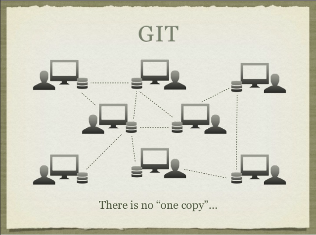
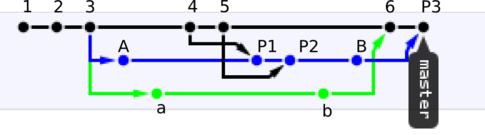
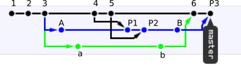

Git
the stupid content tracker
Created by guanghao@
Shamelessly stealed a lot from other sources
What's Git
British English slang: "unpleasant person"
“I'm an egotistical bastard, and I name all my projects after myself. First 'Linux', now 'git'.”
-- Linus Torvalds
Basic Structure

Where is the repository
- .git directory, nothing else
- Move the directory contains .git,
the repository moves with you
Distributed: All git repositories are created equal

What's inside the repository
blob, tree, commit, tag & branches
Demo Time
$ mkdir sample; cd sample
$ echo 'Hello, world!' > greeting
$ git hash-object greeting
$ git init
$ git add greeting
$ git commit -m "Added my greeting"
$ git cat-file -t af5626b
$ git cat-file blob af5626b
$ git ls-tree HEAD
$ git rev-parse HEAD
$ git cat-file -t HEAD
$ git cat-file commit HEAD
$ git ls-tree 0563f77
$ find .git/objects -type f | sort
Commits are snapshots, not deltas

Here comes a thing of beauty:
Immutable Blob
Each commit points to its parent(s)
 

tags & branches are simply pointers to commits

#1: I want to check in a local feature branch (Assuming on top of latest origin/mainline)
#2: I want to check in a local feature branch, which is benhind origin/mainline
#3: What if I have conflicts during rebase
- I want to resolve conflict and check in
- I give up
#4: What if I have local feature branch A, on top of feature branch B, A has been shipped, B has not, I need to check in A?
#5: I want to post code review on a local feature branch, but post-review don't know how to find the diff
#6: Damn! I checked in something else
#7: Damn! I commited some local hack/config file
#8: My working tree is totally a mess, I want to start fresh
#9: My working tree is totally a mess, I want to start fresh
#10: Crap, I did `git reset --hard`, now I can't find my commit
#11: After our monthly deployment, describe function call is failing miserably, I suspect one commit caused it
#12: I want one commit from a coworker's repository
#13: I've made local changes, but Dylan asked you to fix a bug